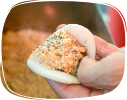

-
遇見最美麗的愛情糕餅@中山路-林菽莊餡餅店
更多資訊Go 達人推薦Ken這間頗具英倫風，顏色繽紛的像是哈利波特電影裡的餡餅店。 架上一整排像是字典似的販賣著種類繁多的糕點，還有許多巧思的名稱，「記憶的樓」、「去愛吧」還有一盒冰沙餡餅叫「記憶的島」。
-
花生湯mix土雞蛋絕妙好滋味@中山路-黃則和花生湯
更多資訊Go 達人推薦Ken乳白色澤的花生湯加了土雞蛋，蛋花漂浮在湯上，依循古法煮製的花生湯能同時吃到花生的香甜還有蛋花的軟嫩，入口即化卻不過分甜膩，配上油條或肉包便是一頓豐盛營養的早餐。
-
廈門版蚵仔煎@中山路-海蠣煎
更多資訊Go 達人推薦Ken台灣的蚵仔肥大鮮美，而廈門、金門盛產的石蚵則是緊實鮮甜。 由於體積較小，這裏的海蠣煎是豪氣地加入大量石蚵，勾芡和調味之後倒入平底鍋、反覆煎熟後再打上蛋液並煎至表面金黃而略帶焦脆，上桌前最後再淋上甜辣醬。
-
以沙茶佐上海鮮滋味@中山路-沙茶麵
更多資訊Go 達人推薦許傑沙茶本應讀沙嗲，到了廈門人嘴裡，便順口叫沙茶。用料豐富加上特製沙茶醬，以及多種海鮮的沙茶麵， 可隨自己的口味加入豬肝、豬腰、鴨腱、大腸、鮮魷魚、豆腐乾等，最後淋上滾開的湯料，一分鐘之內一碗麵就可上桌了。
-
用油煎的廈門版車輪餅@中山路-車輪餅
更多資訊Go 達人推薦許傑不同於台灣的車輪餅，廈門版的車輪餅可是用油煎的，並且主要以鹹口味為主，有香腸、青蔥、蛋、肉...等，店員會切開來包入酸菜，下次來廈門不妨試一試。
-
女孩的下午茶時光@鼓浪嶼-Badycat咖啡廳
更多資訊Go來到廈門不能不來的Badycat咖啡廳，整間都充滿了粉嫩的色調，這裡可是廈門女孩的下午茶最愛私房景點。 除了有一般的咖啡、茶類，還有各式調味飲品，搭配上店家販賣的特色餡餅，就可以耗上一整個下午。
-

小推車的懷舊麻糬@鼓浪嶼-葉氏麻糬
更多資訊Go手工現做的葉氏麻糬，是來到廈門必吃的一道甜點，遠遠地就看到排隊的人龍。 口味共有花生及芝麻，甜而不膩，糯米糰Q軟濕嫩，餡料濃香醇厚。
-
人手一杯廈門潮流飲品@曾厝垵-張三瘋奶茶
更多資訊Go 達人推薦許傑別無分號的張三瘋奶茶，是廈門人最潮流的飲品，街上無不人手一杯。 不同於台灣放的是珍珠配料，張三瘋奶茶放的可是杏仁、五穀和葡萄乾，店員不會給吸管而是給你一根小湯匙。